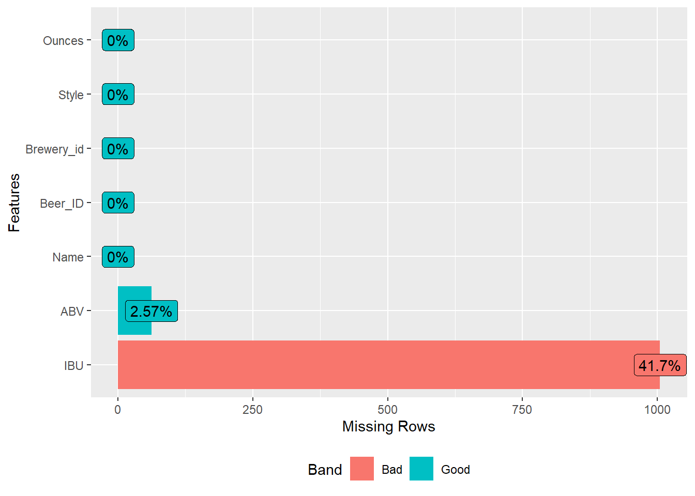
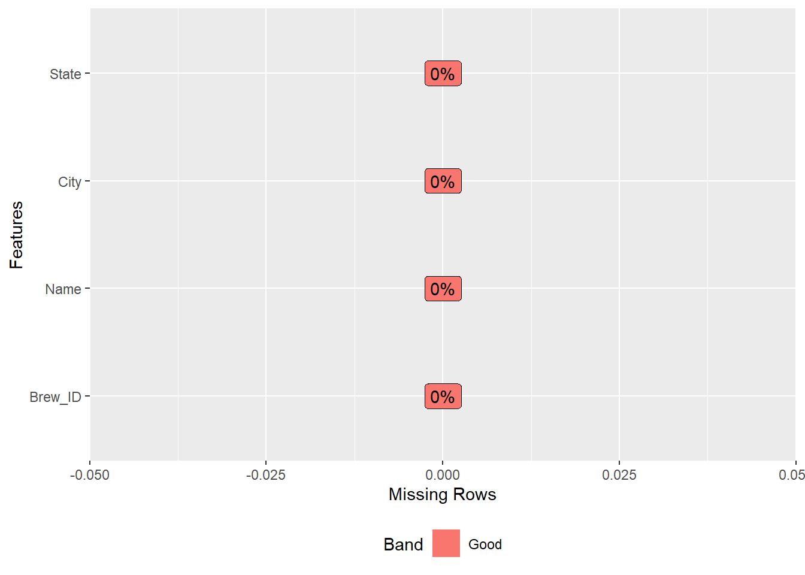
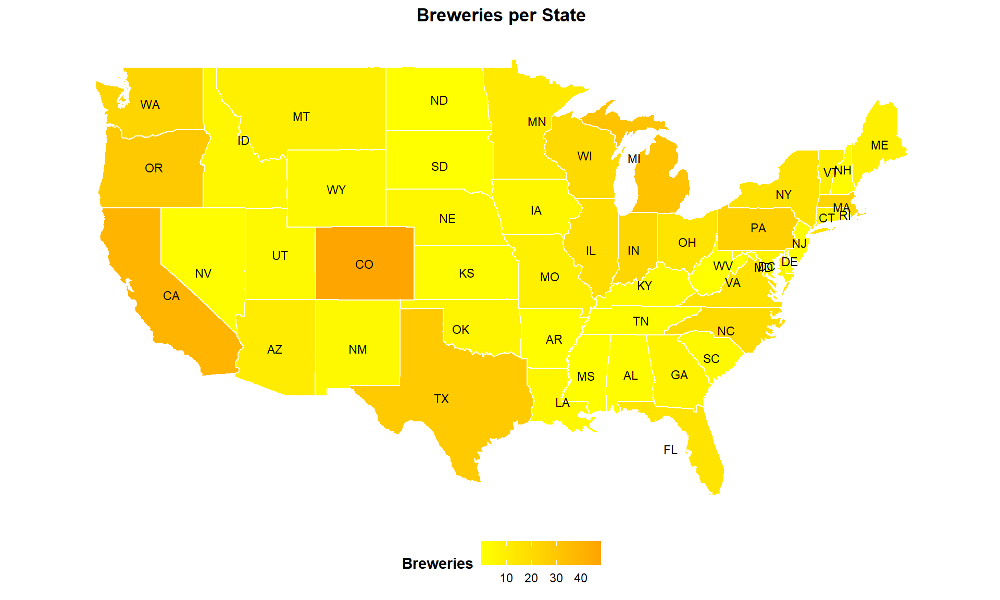
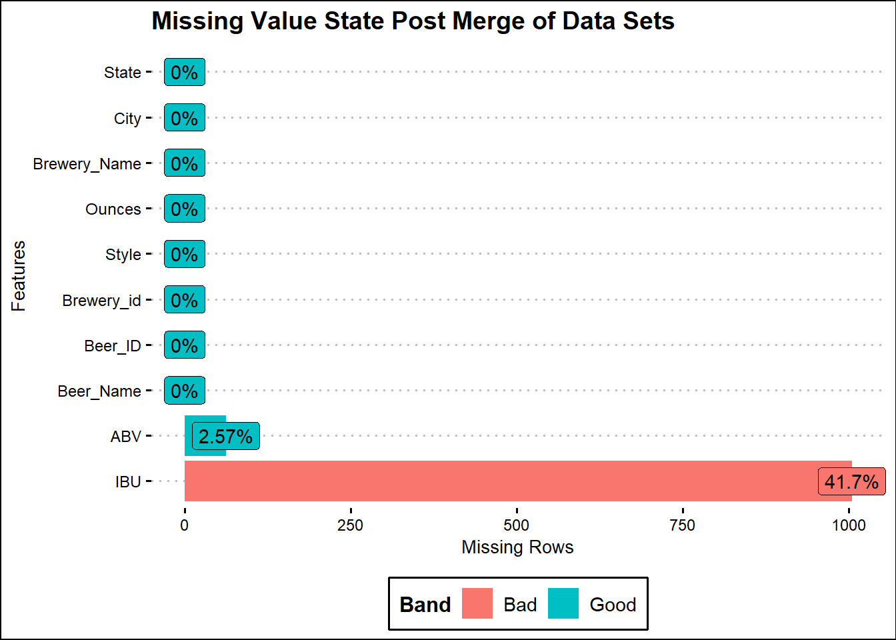
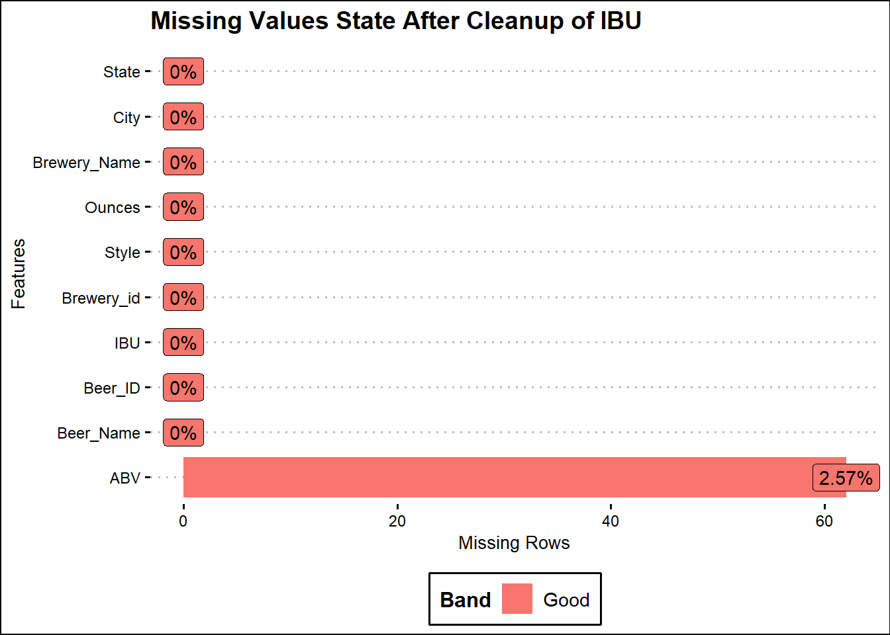
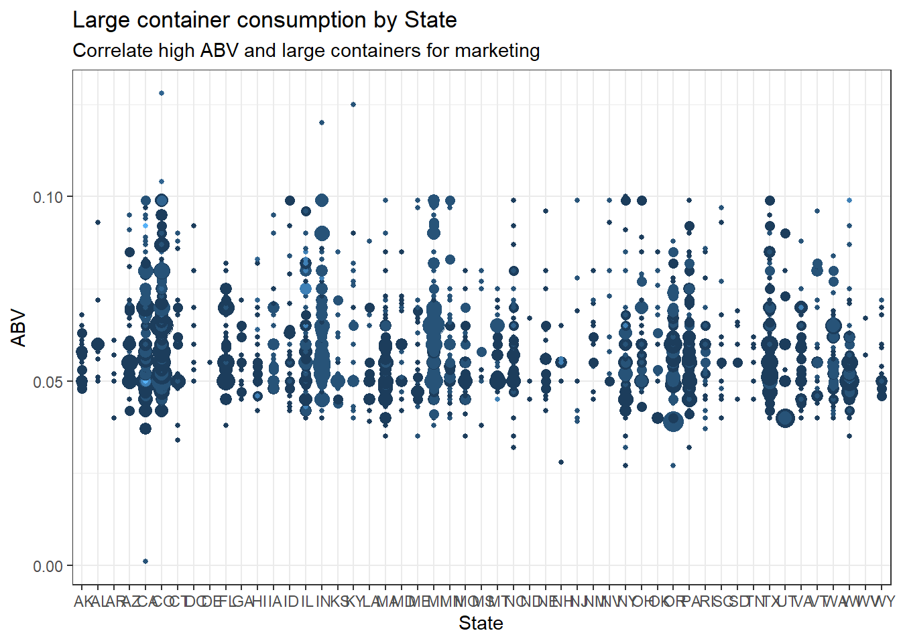

You can assume that your audience is the CEO and CFO of Budweiser (your client) and that they only have had one class in statistics and have indicated that you cannot take more than 7 minutes of their time. 20% of your grade will be based on the presentation.
They have hired you to address the 9 questions / items described in the next section. Beyond those general questions you may and should speculate / anticipate what may be of interest to them.
The GitHub repo should contain the following items and a link to the GitHub repo should be placed on a Word Doc (or PDF) and submitted to 2DS for Unit 8.
The final repo which will be checked after 11:59pm CST March 7th should contain:
The introduction needs to be written as if you are presenting the work to the CEO and CFO of Budweiser (your client) and that they only have had one class in statistics. If it sounds like a student presentation, that is not acceptable. You may assume that the CEO and CFO gave you the data and gave you the directive to report any interesting finding that you may uncover through your analysis.
Briefly explain the purpose of the code. The explanations should appear as a sentence or two before or after the code chunk. Even though you will not be hiding the code chunks (so that I can see the code), you need to assume that the client can’t see them.
Use R to address the 9 questions / items below:
How many breweries are present in each state?
Merge beer data with the breweries data. Print the first 6 observations and the last six observations to check the merged file. (RMD only, this does not need to be included in the presentation or the deck.)
Address the missing values in each column.
Compute the median alcohol content and international bitterness unit for each state. Plot a bar chart to compare.
Which state has the maximum alcoholic (ABV) beer? Which state has the most bitter (IBU) beer?
Comment on the summary statistics and distribution of the ABV variable.
Is there an apparent relationship between the bitterness of the beer and its alcoholic content? Draw a scatter plot. Make your best judgment of a relationship and EXPLAIN your answer.
Budweiser would also like to investigate the difference with respect to IBU and ABV between IPAs (India Pale Ales) and other types of Ale (any beer with “Ale” in its name other than IPA). You decide to use KNN classification to investigate this relationship. Provide statistical evidence one way or the other. You can of course assume your audience is comfortable with percentages … KNN is very easy to understand conceptually.
In addition, while you have decided to use KNN to investigate this relationship (KNN is required) you may also feel free to supplement your response to this question with any other methods or techniques you have learned. Creativity and alternative solutions are always encouraged.
Directives on RMD File: i. Give clear, explicit answers to the questions. Just the code to answer the questions is not nearly enough, even if the code is correct and gives the correct answer. You must state the answer in a complete sentence outside the code chunk.
Knit HTML file.
In fact, you will also upload the knit html file to GitHub as well. This will allow for plots and tables to supplement your answers (part e) to the 7 questions below. You are already making an Rmd file, we should take advantage of it and knit a nice presentation of the project!
Codebook, Both CSV files and a ReadMe.md The Readme file describes the purpose of the project and codebook. The repo can be structured however you like, but it should make sense and be easily navigated.
PPT Slides Described more below and should have the link to your You Tube presentation … described further below as well.)
B. UNIT 8 Live Session: EDA Each team will need to meet with the professor and present their EDA in Unit 8. It is up to the teams and the professor when and how to set up these meetings. They may be during the schedule live session time, but given time constraints, some teams will need to schedule times outside of their scheduled live session time. With that said, these are one on one meetings between each team and the professor. Your only scheduled time commitment in Unit 8 is to attend this 10ish minute meeting with your professor. The rest of the time is reserved to work on your project with your partner. Your goal is to present your EDA (Answers to Questions 1,3,4,5,6,7). At this point, teams should have presentation quality slides and presentation prepared. Responses to each of the questions listed above should be prepared and addressed in this meeting.
The grade for this portion is based on the slide deck and the presentation. If the team is prepared and delivers a well-practiced presentation it should be easy to earn close to a 100% here.
C. Final YouTube Video Each team member will need to record and upload to YouTube a 7-minute or less presentation of your findings. At this point you should know your presentation backwards and forwards. If you trip up too much in your recording, you should start over until you have a very polished presentation that does not exceed 7 minutes.
To record you can download Camtasia (free trial) which is a video software available at https://www.techsmith.com/video-editor.html or use your preferred screen capture software (like QuickTime if you have a Mac.) The presentation slides that include a link to your video should be in the Case Study Github repo as well as on the Google Doc provided by your professor. The goal is to communicate the findings of the project in a clear, concise and scientific manner. Also, uploading to YouTube is not difficult. Here is a YouTube video to help: https://www.youtube.com/watch?v=VtF2AgFSLAw Your professor will make the Google Doc link available to everyone in the class so that your peers can benefit from your work and so that you can benefit from theirs. Student’s presentation links will be available for a week at which time you may take your video off of YouTube if you wish.
This will be a team project. We expect that all team members will do equal work and give their best to advance the knowledge of both themselves and their teammate. All members will need to push, add, commit, and pull to GitHub. This is a collaborative project, be sure and communicate early and often; mutual respect is key.
You will be providing two peer reviews that will be submitted to 2DS in Unit 8 and Unit 9 under: Project 1: EDA and Peer Review (by Saturday Feb 29 11:59pm / Unit 8) and Project 1: Final Documentation, Presentation and Peer Review Assignment (by Saturday March 7 11:59pm / Unit 9) . See the Rubric for detailed information on the peer review.
Questions 1,3,4,5,6,7
#install.packages("vctrs")
library(vctrs)
library(qwraps2)
library(tidyverse) # super library that loads dplyr, ggplot2, lubridate, tidyr, stringr, etc.
library(DataExplorer) # shows missing values by bar and percentage.
library(maps) # used for heat map
library(openintro) # used to convert state abbreviation to full state name
library(gdata)
library(mapdata)
library(mime)
library(treemap) # used for displaying hierarchical data as a set of nested rectangles
library(VIM)
library(inspectdf) #usd for columnwise summary, comparison and visualisation of data frames
library(GGally) # used for ggpairs ()to plot multiple variables, combines different plots into matrix
#library(fiftystater)# use to plot 50-state choropleth thematic maps with ggplot2 in R
library(ggthemes)# used for adding some extra themes, geoms, and scales for 'ggplot2
library(gridExtra)
library(class)
library(broom)
library(caret)
theme_set(theme_classic())setwd("C:/Personal/SMU/DDS6306/Unit12/rajeshsk.github.io")
beers_df <- read.csv(file.choose())
breweries_df <-
read.csv(file.choose()) #store breweries data under breweries_df dataframe#View(beers_df) # view the complete dataframe
names(beers_df) # view the variable names## [1] "Name" "Beer_ID" "ABV" "IBU" "Brewery_id" "Style" "Ounces"dim(beers_df) # view the dimensions of the data## [1] 2410 7str(beers_df) # view the structure of the data## 'data.frame': 2410 obs. of 7 variables:
## $ Name : Factor w/ 2305 levels "#001 Golden Amber Lager",..: 1638 577 1705 1842 1819 268 1160 758 1093 486 ...
## $ Beer_ID : int 1436 2265 2264 2263 2262 2261 2260 2259 2258 2131 ...
## $ ABV : num 0.05 0.066 0.071 0.09 0.075 0.077 0.045 0.065 0.055 0.086 ...
## $ IBU : int NA NA NA NA NA NA NA NA NA NA ...
## $ Brewery_id: int 409 178 178 178 178 178 178 178 178 178 ...
## $ Style : Factor w/ 100 levels "","Abbey Single Ale",..: 19 18 16 12 16 80 18 22 18 12 ...
## $ Ounces : num 12 12 12 12 12 12 12 12 12 12 ...head(beers_df, n = 5) # view the first 5 records## Name Beer_ID ABV IBU Brewery_id Style Ounces
## 1 Pub Beer 1436 0.050 NA 409 American Pale Lager 12
## 2 Devil's Cup 2265 0.066 NA 178 American Pale Ale (APA) 12
## 3 Rise of the Phoenix 2264 0.071 NA 178 American IPA 12
## 4 Sinister 2263 0.090 NA 178 American Double / Imperial IPA 12
## 5 Sex and Candy 2262 0.075 NA 178 American IPA 12tail(beers_df, n = 5) # view the last 5 records## Name Beer_ID ABV IBU Brewery_id Style Ounces
## 2406 Belgorado 928 0.067 45 425 Belgian IPA 12
## 2407 Rail Yard Ale 807 0.052 NA 425 American Amber / Red Ale 12
## 2408 B3K Black Lager 620 0.055 NA 425 Schwarzbier 12
## 2409 Silverback Pale Ale 145 0.055 40 425 American Pale Ale (APA) 12
## 2410 Rail Yard Ale (2009) 84 0.052 NA 425 American Amber / Red Ale 12summary(beers_df) # view basic model data i.e. min, max, mdedium, mean, etc.## Name Beer_ID ABV IBU Brewery_id Style
## Nonstop Hef Hop : 12 Min. : 1.0 Min. :0.00100 Min. : 4.00 Min. : 1.0 American IPA : 424
## Dale's Pale Ale : 6 1st Qu.: 808.2 1st Qu.:0.05000 1st Qu.: 21.00 1st Qu.: 94.0 American Pale Ale (APA) : 245
## Oktoberfest : 6 Median :1453.5 Median :0.05600 Median : 35.00 Median :206.0 American Amber / Red Ale : 133
## Longboard Island Lager: 4 Mean :1431.1 Mean :0.05977 Mean : 42.71 Mean :232.7 American Blonde Ale : 108
## 1327 Pod's ESB : 3 3rd Qu.:2075.8 3rd Qu.:0.06700 3rd Qu.: 64.00 3rd Qu.:367.0 American Double / Imperial IPA: 105
## Boston Lager : 3 Max. :2692.0 Max. :0.12800 Max. :138.00 Max. :558.0 American Pale Wheat Ale : 97
## (Other) :2376 NA's :62 NA's :1005 (Other) :1298
## Ounces
## Min. : 8.40
## 1st Qu.:12.00
## Median :12.00
## Mean :13.59
## 3rd Qu.:16.00
## Max. :32.00
## plot_missing(beers_df) #shows missing values using package DataExplorer
names(breweries_df) # view the variable names## [1] "Brew_ID" "Name" "City" "State"dim(breweries_df) # view the dimensions of the data## [1] 558 4str(breweries_df) # view the structure of the data## 'data.frame': 558 obs. of 4 variables:
## $ Brew_ID: int 1 2 3 4 5 6 7 8 9 10 ...
## $ Name : Factor w/ 551 levels "10 Barrel Brewing Company",..: 355 12 266 319 201 136 227 477 59 491 ...
## $ City : Factor w/ 384 levels "Abingdon","Abita Springs",..: 228 200 122 299 300 62 91 48 152 136 ...
## $ State : Factor w/ 51 levels " AK"," AL"," AR",..: 24 18 20 5 5 41 6 23 23 23 ...head(breweries_df, n = 5) # view the first 5 records## Brew_ID Name City State
## 1 1 NorthGate Brewing Minneapolis MN
## 2 2 Against the Grain Brewery Louisville KY
## 3 3 Jack's Abby Craft Lagers Framingham MA
## 4 4 Mike Hess Brewing Company San Diego CA
## 5 5 Fort Point Beer Company San Francisco CAtail(breweries_df, n = 5) # view the last 5 records## Brew_ID Name City State
## 554 554 Covington Brewhouse Covington LA
## 555 555 Dave's Brewfarm Wilson WI
## 556 556 Ukiah Brewing Company Ukiah CA
## 557 557 Butternuts Beer and Ale Garrattsville NY
## 558 558 Sleeping Lady Brewing Company Anchorage AKsummary(breweries_df) # view basic model data i.e. min, max, mdedium, mean, etc.## Brew_ID Name City State
## Min. : 1.0 Blackrocks Brewery : 2 Portland: 17 CO : 47
## 1st Qu.:140.2 Blue Mountain Brewery : 2 Boulder : 9 CA : 39
## Median :279.5 Lucette Brewing Company: 2 Chicago : 9 MI : 32
## Mean :279.5 Oskar Blues Brewery : 2 Seattle : 9 OR : 29
## 3rd Qu.:418.8 Otter Creek Brewing : 2 Austin : 8 TX : 28
## Max. :558.0 Sly Fox Brewing Company: 2 Denver : 8 PA : 25
## (Other) :546 (Other) :498 (Other):358plot_missing(breweries_df) #shows missing values using package DataExplorer
brewery_dupes <-
as.character(breweries_df[which(duplicated(as.character(breweries_df$Name))), "Name"]) # Check for duplicates breweries names
breweries_df %>% filter(Name == "Summit Brewing Company") # Brew_ID, City (St. Paul, St Paul)## Brew_ID Name City State
## 1 59 Summit Brewing Company St. Paul MN
## 2 139 Summit Brewing Company St Paul MNbreweries_df %>% filter(Name == "Lucette Brewing Company") # Brew_ID, City (Menominee, Menominie)## Brew_ID Name City State
## 1 378 Lucette Brewing Company Menominee WI
## 2 457 Lucette Brewing Company Menominie WIbreweries_df$City <-
str_replace_all(breweries_df$City, "St. Paul", "St Paul") ## sync spelling
breweries_df$City <-
str_replace_all(breweries_df$City, "Menominee", "Menominie") ## sync spellingoptions(show.error.messages = FALSE)
try(breweries_df <-
rename(breweries_df, Brewery_id = Brew_ID))
# changed col or variable name to match both data set.
try(breweries_df <-
rename(breweries_df, Brewery_Name = Name))
#changed col or variable name
try(beers_df <-
rename(beers_df, Beer_Name = Name))
#changed col or variable name
options(show.error.messages = TRUE)states_df <- map_data("state") # get US states and their coordinatesHow many breweries are present in each state?
brewery_states_df <-
breweries_df %>% group_by(State) %>% distinct(Brewery_id) # grouping by State using dplyr package
brewery_count <- aggregate(Brewery_id ~ State, breweries_df, length)
names(brewery_count) <-
c("State", "Breweries") # replace the col names
brewery_count$State <-
trim(brewery_count$State, recode.factor = TRUE) # trim white spaces
brewery_count$region <-
tolower(abbr2state(brewery_count$State)) # change all region to lower case
brewery_map_df <-
left_join(states_df, brewery_count, by = "region") # merge state_df and brewery count by region to plot all the state in us map.
state_center <-
aggregate(
cbind(long, lat) ~ State,
data = brewery_map_df,
FUN = function(x)
mean(range(x))
) # combine lat and long of same repeated state into one long and lat
state_center_region <- brewery_map_df %>% group_by(State) %>%
summarize_at(vars(long, lat), ~ mean(range(.)))
all.equal(state_center, as.data.frame(state_center_region))## [1] TRUElibrary(mapproj) # for coord_map function - projects map in spherical into 2D
ggplot(data = brewery_map_df) +
geom_path(aes(x = long, y = lat, group = group), color = "white") +
geom_polygon(aes(
x = long,
y = lat,
group = group,
fill = Breweries # fill the map by breweries type by state and total breweries.
), color = "white") +
coord_map() +
scale_fill_gradient(low = "yellow" , high = "orange") + # create label color gradient
geom_text(aes(x = long, y = lat, label = State),
#geom_text - adds name of State into the map
data = state_center,
size = 3) +
ggtitle("Breweries per State") +
theme(
axis.text = element_blank(),
axis.line = element_blank(),
axis.ticks = element_blank(),
panel.border = element_blank(),
panel.grid = element_blank(),
axis.title = element_blank(),
legend.position = "bottom",
legend.title = element_text(face = "bold"),
legend.direction = "horizontal",
plot.title = element_text(face = "bold",
hjust = 0.5)
) # element_black : remove x- axis, y-axis lines, labels, title. Formate legneds and plot text
Merge beer data with the breweries data. Print the first 6 observations and the last six observations to check the merged file. (RMD only, this does not need to be included in the presentation or the deck.)
We merged the two data set into one and named it as ‘mergeDF’, the primary key being used is ‘Brewery_id’ from Beer data set, and ‘Brew_ID’ from Breweries data set. We also changed the two columns’ name for clear understanding. The first and last 6 observations were showed there with head/tail command.
beer_brewery_merged_df <-
full_join(beers_df, breweries_df, by = "Brewery_id") # merge by full_join using key word Brewery_id
head(beer_brewery_merged_df, n = 5) # view the first 5 records## Beer_Name Beer_ID ABV IBU Brewery_id Style Ounces Brewery_Name City State
## 1 Pub Beer 1436 0.050 NA 409 American Pale Lager 12 10 Barrel Brewing Company Bend OR
## 2 Devil's Cup 2265 0.066 NA 178 American Pale Ale (APA) 12 18th Street Brewery Gary IN
## 3 Rise of the Phoenix 2264 0.071 NA 178 American IPA 12 18th Street Brewery Gary IN
## 4 Sinister 2263 0.090 NA 178 American Double / Imperial IPA 12 18th Street Brewery Gary IN
## 5 Sex and Candy 2262 0.075 NA 178 American IPA 12 18th Street Brewery Gary INtail(beer_brewery_merged_df, n = 5) # view the last 5 records## Beer_Name Beer_ID ABV IBU Brewery_id Style Ounces Brewery_Name City State
## 2406 Belgorado 928 0.067 45 425 Belgian IPA 12 Wynkoop Brewing Company Denver CO
## 2407 Rail Yard Ale 807 0.052 NA 425 American Amber / Red Ale 12 Wynkoop Brewing Company Denver CO
## 2408 B3K Black Lager 620 0.055 NA 425 Schwarzbier 12 Wynkoop Brewing Company Denver CO
## 2409 Silverback Pale Ale 145 0.055 40 425 American Pale Ale (APA) 12 Wynkoop Brewing Company Denver CO
## 2410 Rail Yard Ale (2009) 84 0.052 NA 425 American Amber / Red Ale 12 Wynkoop Brewing Company Denver COAddress the missing values in each column.
There are 62 observations where both ABV and IBU had NA values. 943 observations where the IBU only are NA’s. We replaced 62 NA’s in ABV with state level median value. Replacing 1005 NA’s in IBU with state level median led to an 18% reduction in the accuracy of the correlation model. Predicted values from simple linear regression model are used to replace missing values in IBU to improve the accuracy of the model.
plot_missing(beer_brewery_merged_df,
title = "Missing Value State Post Merge of Data Sets",
ggtheme = theme_clean())
#aggr(beer_brewery_merged_df, prop = FALSE, numbers = TRUE)
beer_brewery_merged_df <-
beer_brewery_merged_df %>% mutate(IBU = ifelse(is.na(IBU) |
is.na(ABV), 0, IBU)) # replace all empty and NA value by zero. Replce New IBU with New IBU using mutate()
plot_missing(beer_brewery_merged_df,
title = "Missing Values State After Cleanup of IBU",
ggtheme = theme_clean())
# code added to drop ABV NA's
beer_brewery_merged_df <- beer_brewery_merged_df %>% drop_na(ABV)theme_set(theme_bw())
g <- ggplot(beer_brewery_merged_df, aes(State, ABV, color = Ounces))
market <- g + geom_count(show.legend = F) +
labs(
subtitle = "Correlate high ABV and large containers for marketing",
y = "ABV",
x = "State",
title = "Large container consumption by State"
)
market Conclusion
# DDS- Project-01 Summary:
The primary objective of our project is to take two different dataset, beer data set containing a list of 2410 US crafts beers and breweries dataset containing 558 breweries an perform analysis. We transformed the data in CVS format into data frame using R-programming, inspected and analyzed the structure of the data, merged the two data frames, and performed analysis on the merged final data set.
As Data Scientist, it is very rare that we get to work only on a single perfect data. A large percentage of work is to accept different datasets and merge them into one final data frame before processing as it is illustrated in our project. After analyzing the data, statistical inference is then made.
The objective of our project is to provide some valuable information such as summary of two dataset, relation between International Bitterness Unit (IBU) and Alcohol By Volume (ABV), number of breweries in each state and how can be an important to Budweiser, and to compute the median and max IBU and ABV.
Based on our team’s analysis, we found that majority of breweries appears to be clustered towards the west of the Mississippi river with California and Colorado being the top two states. Why do these states mostly CO has the highest number of Breweries? Water is the secrete ingredients making CO the top state for breweries in the world and also making 2017 gold medal winner. The water alone contains about 80-90% of water chemistry needed to make the best beers. CO water has the perfect mix of magnesium, sodium, sulfates, bicarbonates and calcium which determines the hardness of water and ultimately its suitability for brewing great testing beers. Hence, we believe that Budweiser should consider thinking about CO in their next project.
Other state of interest, New Hampshire which we believe has the high potential for growth has the highest beer consumers due to no beer sale tax but do not have much breweries. Utah on the other hand has the lowest beer consumer and only allows ABV <4 % which could be due to it being a Mormon state. We were surprised at Nevada, being the home of Las Vegas has only two breweries. North and South Dakota are lowest in the number of breweries but are one of the highest in beer consumption capita.
Our computation of the median IBU and ABV for each state shows that median IBU appears to vary considerably between the states. However, West Virginia falls in the middle with median IBU 37 and Arkansas at the bottom with IBU 7.8. On the other hand, median ABV per state appears somewhat consistent, with Nevada being in the middle with median ABV of 0.0669 which kind of make sense because people who visit Las Vegas majority of the time likes to get drunk, gamble and enjoy their time. Utah again, being the lowest beer consumer also has the lowest ABV of 0.051. In term of Max ABV, all the state appears to have only a small variance. Colorado has the max ABV of 0.128 and Delaware the lowest at 0.055.
IBU which stands for International Bitterness Units, a measure of the bitterness in beer. There is a saying spicier the better, same applies to the beers as well. Bitter the beer better is the taste. The bitterness in beer terms mean better flavor which is produced by adding aroma hop flowers. According to CNBC news, the reason for rise in craft beer sales is its high IBU among the home brewing company that’s growing from garage to thriving commercial company. Our analysis shows that max IBU by states appears to vary between the state ranging from 138 to 0, with Oregon being the highest (138) and Arkansas the lowest (44.11). The reason we believe Oregon has the highest IBU is because Oregon is known for homemade craft beer and they also add high-grade marijuana in their craft beers. However, according to new law, started in Jan 2020, they are avoiding THC or CBD in their beers due to health concern. Arkansas stands at the bottom for IBU.
In a nutshell, our analysis of relationship between ABV and IBU shows that there is somewhat positive linear relation. In general, as the ABV rises so does the bitterness. IPA type has the highest ABV compared to other type also higher the Ounces higher the ABV.
Ref: https://www.cnbc.com/2014/07/03/state-of-hopiness-how-many-ibus-in-your-ipa.html https://apnews.com/640bcd2970430a6cdaa7c37166dac1c9S ```